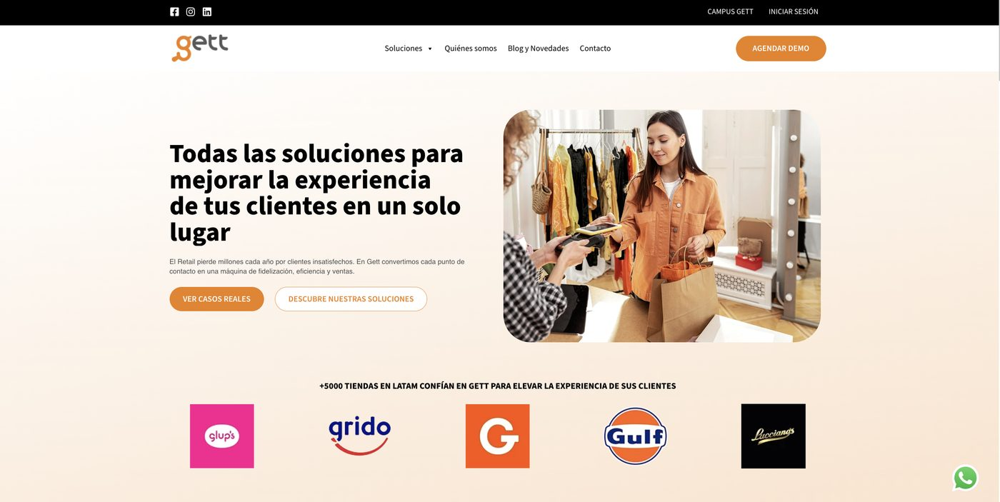
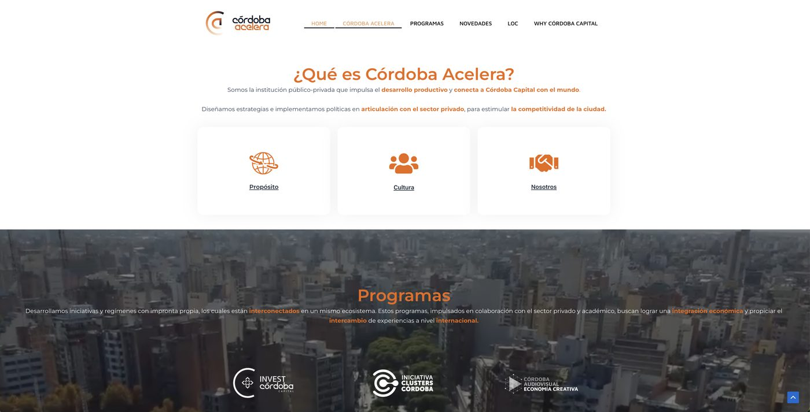

Earlier work, 2020 to 2023
Four roles in Argentina before I moved to Australia: CRM, growth marketing, trade marketing and teaching.
CRM from zero as the only marketer
Gett Argentina, January to October 2020
Gett is a Latin American mystery shopping company. Businesses subscribe to have undercover shoppers film and audit their in-store service, and the shoppers are recruited and managed through a mobile app.
In 2020 the Argentine business had 15 people and I was its only marketer, reporting to the Founder and the Commercial Manager. I joined in a commercial support role and was promoted after six months into a new CRM role.
What I built
- A CRM in HubSpot for the network of mystery shoppers, grown from 10 contacts to more than 150, with user personas, a journey map and three segments.
- Four automated workflows across onboarding, lead nurture and win-back.
- Segmented Meta Ads to recruit mystery shoppers, which brought in 200+ qualified leads in one month, with 65% of leads qualifying.
- An email, SMS and push journey triggered by behaviour. 150 of those leads became app users, a 58% conversion.
- Five process playbooks that other teams kept using after I left.
- Segmented Meta AdsAudiences built on demographics and behaviour
- Qualified leads200+65% of leads qualified
- Email, then SMS and pushEach message triggered by what the person did
- App users15058% of qualified leads
The website
I managed four external vendors to launch the company website and an e-commerce platform selling mystery shopping subscriptions to businesses, in one month. My part was the user experience, brand tone and communication style.

Before the CRM role
As Commercial Management Assistant I handled post-delivery contact for 150 business accounts, with 95% client satisfaction and a 30-minute average resolution time.
Email tests, social and three trade shows
Córdoba Acelera, April to August 2023
Córdoba Acelera is a local government body of the Municipality of Córdoba that supports entrepreneurs, investment and the city's economic development. I worked there for five months on growth marketing.
- Ran six structured tests on subject lines, calls to action and copy for a 100-contact email list. The open rate went from 20% to 35% over three weeks. The list was small, so I read this as a testing habit more than a statistical result.
- Grew the agency's Instagram from 300 to 1,145 followers, on a total paid budget under USD 1,000 across all channels.
- Ran booths at three trade shows: 1,400 visitors and 250 leads captured.
- Planned and published daily across LinkedIn, Facebook, Instagram and X.
- Built a 120-member professional community through LinkedIn and email, which produced 10 programme applications and 40 enquiries or event registrations.
- Contributed design and content to the agency's website.

Leading a field team of 20
Molinos Río de la Plata, January 2022 to March 2023
Molinos is one of Argentina's largest food manufacturers. As Retail Execution Supervisor in trade marketing, I turned central marketing plans into what shoppers saw in store.
- Led 20 people across 35 retail sites and a territory of more than 3,000 square kilometres, with no one leaving the team in 14 months.
- Lifted share of shelf by 10 percentage points and scored 9 out of 10 in the compliance audit.
- Tracked more than 50 KPIs weekly and monthly, and reported them to commercial, marketing and operations.
Teaching Marketing I
Universidad Siglo 21, March to July 2023
I designed and taught the undergraduate Marketing I course to more than 150 students, in person and online, while working at Córdoba Acelera. The pass rate was 96%, the student evaluation was 8 out of 10, and I was invited back to teach again.